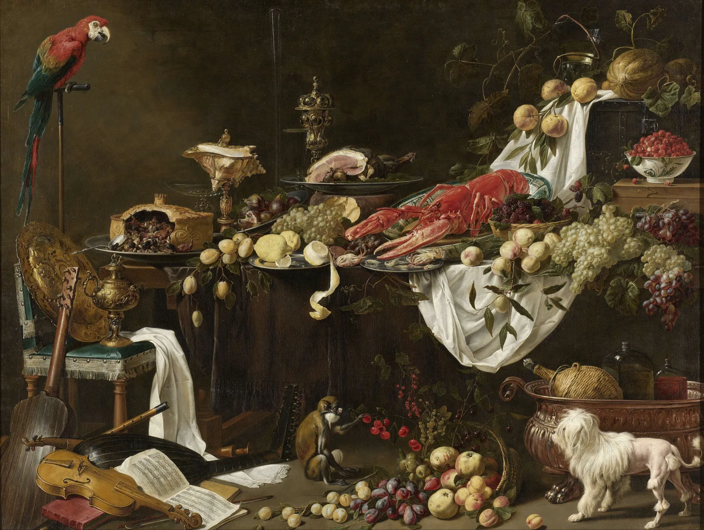
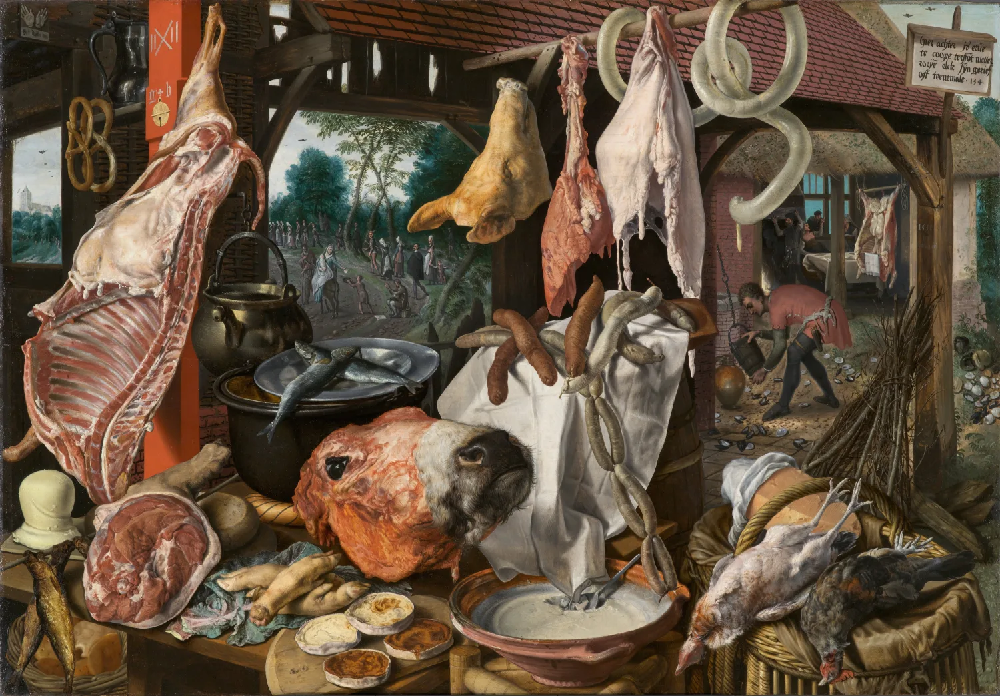
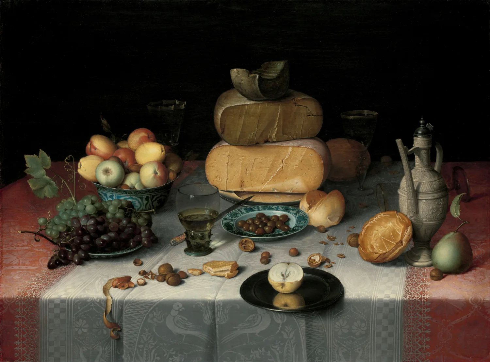
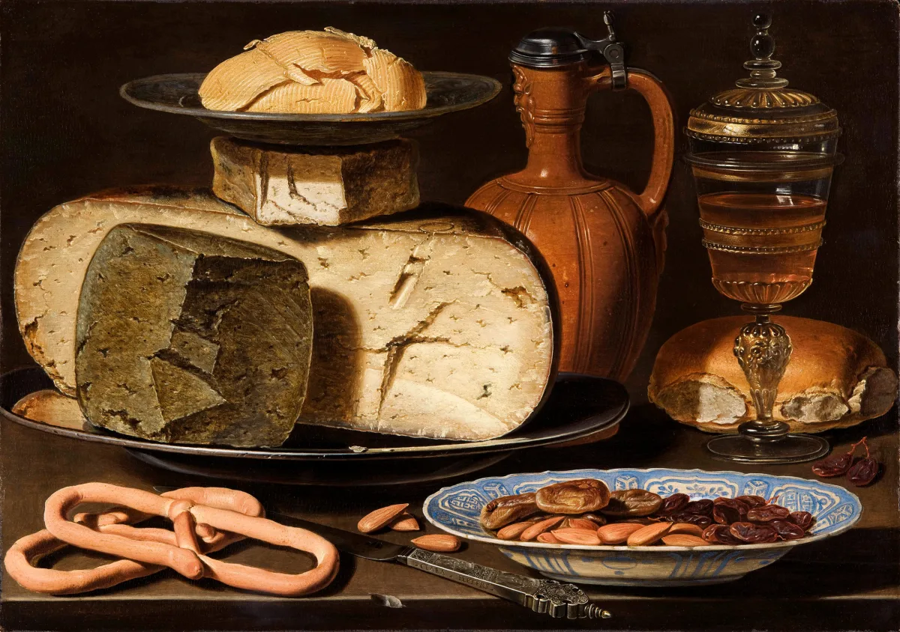

The short version
Four of the most popular diets in the world were run head to head for a year: Atkins, the Zone, Weight Watchers, and Ornish. They disagree about almost everything. People lost about the same amount of weight on all four. The only thing that predicted who kept it off was how closely they stuck to the plan, not which plan they drew. Dansinger 2005 good
This guide is about food, the third thing you can train alongside the muscle in Big Enough and the heart in Still Moving. It is also the one surrounded by the most noise: a whole industry is paid to make eating complicated, because complicated is what you can sell. Two simple ideas cut through almost all of it.
The first is that two different questions get tangled together. How much you weigh is, to a first approximation, a question of energy: calories in against calories out. How long and how well you live is a question of food quality: more whole and minimally processed things, more fiber and protein, less ultra-processed food and less liquid sugar. Mix the two questions up and you get the whole confused mess of modern diet advice. Keep them apart and most of it falls into place.
The second is the idea this site keeps circling back to. Every lever works up to a point, then quietly stops paying. Enough protein helps; double it and you have bought expensive urine. Some fiber helps a lot, and unusually keeps helping. A daily walk helps; a daily marathon does not help more. And a couple of levers do not flatten at all; push them and they bend back down into harm. The whole skill is finding where each one stops paying and leaving it there.
If you did only these six things and ignored every other word written about food, you would be eating better than almost everyone.
That is the whole pantry. The chapters that follow are just the manual: what each rule rests on, how hard to pull it, and the exact point where pulling harder stops paying you back.
Weight is energy, health is food
The most useful thing you can do with all the diet noise is sort it into two piles, because it is answering two different questions that have two different answers. One is about the number on the scale. The other is about how long you last. They are not the same question, and almost nothing solves both at once.
The scale is energy
How much you weigh comes down to energy balance: eat fewer calories than you burn and you lose weight, eat more and you gain. This part is not really in scientific dispute. Every honest weight-loss diet ever invented, low-carb, low-fat, fasting, keto, points, whatever, is a different trick for getting you to eat fewer calories without feeling like you are starving. That is the whole job. The branding is which trick.
You will hear that "a calorie is a calorie" is a lie, and there is a real point hiding in that. For the scale, it is basically true: lock calories down and people lose about the same weight whatever the source. But for everything around the scale it bends two ways. Protein costs your body far more energy just to digest, 20 to 30 percent of its calories, against almost nothing for fat, and it fills you up more, so 200 calories of chicken and 200 calories of butter do not land the same way. Westerterp 2004 good And at the same calorie deficit, people eating plenty of protein lose almost all of it as fat instead of muscle. Longland 2016 good So calories decide how much you lose. Protein and food quality decide how much of it is fat, and how miserable the whole thing feels.
Why "just count calories" fails real people
If weight is energy, why is counting calories such a reliable way to fail? Because people cannot actually count. When researchers measured it directly, people underreported what they ate by an average of 47 percent and overreported their exercise by 51 percent. Lichtman 1992 mixed Not because they were lying, but because humans are bad at it. The number on the package is soft, the spoonful is bigger than you think, and the memory of the day is kinder than the day was. The arithmetic is correct. The data you feed it is garbage.
And you cannot fix the math by exercising it away. When anthropologists measured the daily energy burn of the Hadza, hunter-gatherers in Tanzania who walk and dig and carry all day, they burned about the same number of calories per day as office workers in Chicago. Pontzer 2012 good The body treats its energy budget like a thermostat: move more and it quietly spends less elsewhere. Exercise is close to the best thing you can do for your health, which is the entire point of Still Moving. It is one of the worst things you can do for weight loss. Weight is made in the kitchen.
The body lasts on food
The second question, how long and how well you live, has a different answer, and the named diet matters even less here. The people who live longest are not, as a rule, keto or vegan or carnivore. They eat mostly whole foods, a lot of plants and fiber, and not much that came out of a wrapper. The pattern matters more than any nutrient, and far more than any brand. The rest of this guide takes those levers one at a time: the one food that does the most damage, the two worth adding, the pills worth skipping, and why the weight comes back.
Every diet is the same diet
Pick any two diets that hate each other, low-fat and low-carb, say, and run them properly for a year. They tie. Not "close enough." Tie. The diet you have been told is the answer is, for the purpose of losing weight, the same as the one it is fighting with.
The cleanest test is Stanford's DIETFITS trial: more than 600 people, healthy low-fat against healthy low-carb, twelve months. The low-fat group lost about 12 pounds, the low-carb group about 13. The difference was noise. And here is the part that should retire an entire industry: the researchers had genotyped everyone and measured their insulin response first, expecting to predict who would do better on which diet. Neither predicted anything. Gardner 2018 good The idea that you have a "diet type" written in your biology, the thing every quiz and DNA kit is selling, is a fiction.
Average weight lost after a year on each diet, in one head-to-head trial. Find the gap that would change your life. There is not one.
The bigger trials say the same thing. A meta-analysis of 48 trials and 7,300 people found low-carb and low-fat both landing near 16 pounds at a year, with only crumbs between the named brands. Johnston 2014.
It keeps replicating. POUNDS LOST put 811 people on four different mixes of fat, protein, and carbs for two years and found no winner; the thing that predicted who lost weight was how many counseling sessions they showed up to. Sacks 2009 good The 48-trial review came right out and said it: prescribe whichever diet the patient will actually stick to. Johnston 2014 strong
There is no metabolic magic in cutting carbs, the claim under half the diet books ever sold. The cleanest possible test, a metabolic ward where every single calorie is weighed and controlled, found that cutting fat produced slightly more body-fat loss than cutting carbs at equal calories, the exact opposite of the low-carb pitch. Hall 2015 good The "insulin makes you fat, so banish carbs" model keeps losing its own experiments.
Intermittent fasting is the same story in newer packaging. Squeezing your eating into a shorter window works when it makes you eat less, which it often does. Head to head against plain old calorie counting, it does not beat it. A smaller eating window is a calorie trick, a useful one for some people, not a metabolic cheat code.
The exception that is real: when a diet is medicine
All of that is true for losing weight in a healthy person. It is not true when a diet is being used as a drug, and this is the caveat worth keeping in plain sight. For some conditions a specific diet genuinely beats the others, on hard medical numbers, not vibes. Low-carb really does lower blood sugar better for type 2 diabetes; in one review, 57 percent of patients hit diabetes remission at six months versus 31 percent on the control diet (though the edge fades by a year as people drift back). Goldenberg 2021 good A ketogenic diet is a real, prescribed treatment for drug-resistant epilepsy. DASH genuinely lowers blood pressure. Appel 1997 good A low-FODMAP diet really does calm irritable bowel syndrome. If you have the condition, the diet is medicine. If you do not, it is a brand.
The 500-calorie machine
Here is the closest thing nutrition has to a clean experiment, and maybe the single most important result in the field. Same calories on the table. Same protein, fat, sugar, salt, and fiber. The only thing that changed was whether the food came from a factory or a kitchen. People ate 500 calories a day more on the factory food, and gained weight. The same people, two weeks later, on the home food, lost it.
The National Institutes of Health locked 20 adults in a metabolic ward for a month and controlled every bite. Two diets, two weeks each, matched on the nutrition label all the way down to fiber and even calorie density. Everyone could eat as much or as little as they wanted. On the ultra-processed diet they ate 508 calories a day more and gained about two pounds; on the whole-food diet they lost about two. Hall 2019 good The food itself moved their appetite half a thousand calories a day, with nobody deciding anything.
Weight change over two weeks on each diet, by the same 20 people, eating freely. The cause sits in the middle: 508 extra calories a day on the ultra-processed food.
Two pounds in two weeks does not sound like much. Run it for a year at that rate and it is the difference between slimming down and the slow climb most people are actually on. Hall 2019.
"Ultra-processed" has a real definition, not just a vibe. The NOVA system sorts food by how much industry has done to it. Monteiro 2019 Chopping, freezing, canning, and fermenting are all fine. Ultra-processed means the top tier: industrial formulations built mostly from refined extracts and additives, with little intact food left in them. Soda, packaged snacks, most breakfast cereals, reconstituted chicken nuggets, the shelf-stable ready meal. The rough test is the back of the box. If it is a long list of things you would never have in your own kitchen, it is probably ultra-processed.

Why does the same food, matched bite for bite on paper, make you eat 500 calories more? The honest answer is that nobody has fully nailed it, but the leading suspects all point the same way. Ultra-processed food is soft and energy-dense, so you eat it fast, and you are finished before the fullness signal catches up. It is engineered, expensively, to be exactly as moreish as possible. And it tends to be thin on protein, so you keep eating to hit the protein your body is quietly demanding. Gosby 2011 mixed However it works, the effect is real and it bypasses your willpower entirely.
The longevity claim, graded honestly
Beyond weight, people who eat the most ultra-processed food also have more heart disease, diabetes, depression, and earlier deaths. The biggest review, pooling studies of nearly 10 million people, tied high intake to dozens of worse outcomes: cardiovascular death up about 50 percent, all-cause mortality up about 20 percent. Lane 2024 mixed Worth being straight about the grade, though. That part is observational: people who eat the most ultra-processed food differ in a hundred other ways, and the studies cannot fully separate the food from the life around it. The one true experiment is Hall's, and it ran for two weeks on 20 people. NOVA is a loose net that files whole-grain bread next to cola. So the overeating effect is proven, and the disease numbers are a strong, consistent association rather than a closed case. Either way the move is identical.
The two things to add
Almost all diet advice is about what to cut. The two changes with the best evidence behind them are things to add, and hardly anyone gets enough of either. Protein and fiber. Get those two up and a surprising amount of the rest takes care of itself.

Protein: the most filling thing you can eat
Big Enough covers protein for building muscle. This is protein for eating less. Calorie for calorie, it is the most filling thing on your plate: when people were told to get 30 percent of their calories from protein, they spontaneously ate about 440 fewer calories a day and lost weight, without being asked to cut anything. Weigle 2005 good It also protects your muscle while you lose fat, so the weight that comes off is the weight you wanted gone.
The target is about 0.7 grams per pound of bodyweight, which is plenty for nearly everyone. Past roughly 1 gram per pound there is nothing left to gain for general health, so this is another lever that flattens out fast. Hit the number from food first: meat, fish, eggs, dairy, beans, lentils. The tool below works it out for you.
Fiber: the lever that keeps paying
Fiber is the most under-eaten nutrient in the country. The average American gets about 15 grams a day; the target is 25 for women and 38 for men. Dietary Guidelines The WHO-commissioned review of 185 studies and 58 trials found the highest-fiber eaters had 15 to 30 percent lower death rates, with less heart disease, diabetes, and colon cancer, in a clean dose-response. Reynolds 2019 strong And here is the rare lever that does not plateau early: across the whole range anyone studied, more fiber kept helping.
Risk of death against daily fiber. Most people sit at the high-risk left end. Unlike almost everything else in this guide, the line keeps dropping the further right you go.
Be fair about the grade: the death-rate part is observational, and people who eat a lot of fiber tend to eat well in general. But it is backed by trials for the hard stuff like cholesterol and blood sugar, and there is no plausible downside to eating more beans. Reynolds 2019.
The catch is that fiber is not a pill. The big review pointedly excluded fiber-powder trials; the benefit lives in the food, in beans and lentils and whole grains and fruit and vegetables and nuts. You cannot buy your way to it in the supplement aisle, which is a good place for the next chapter to start.
Your three numbers
interactiveThe aisle is mostly theater
Americans spend tens of billions of dollars a year on supplements. For a well-fed adult, almost all of it does nothing, and a few of the most popular ones gently raise your odds of dying. The supplement aisle is one of the great triumphs of marketing over evidence.
Start with the biggest seller, the multivitamin. It does not extend life or prevent heart disease or cancer in well-nourished people, and this has been tested about as well as anything in nutrition. The Physicians' Health Study II followed roughly 14,000 doctors for over a decade: cardiovascular events came out dead even, a hazard ratio of 1.01. Sesso 2012 strong A 2024 analysis of 390,000 people found no lower death rate for daily multivitamin users either. Loftfield 2024 good After reviewing 84 studies, the U.S. Preventive Services Task Force concluded there was not enough evidence to recommend them at all. USPSTF 2022 strong
The part where more turns into harm
The antioxidant story is the cleanest example in this whole guide of a lever that does not flatten, it bends into harm. For years the observational data made antioxidants look protective, so people started taking big doses. Then the trials arrived. Beta-carotene supplements raised lung cancer in smokers by about 18 percent, and a second trial was stopped early for the same reason. ATBC 1994 CARET 1996 strong A meta-analysis of 230,000 people found beta-carotene, vitamin A, and vitamin E supplements nudged death rates up, not down. Bjelakovic 2007 good More was not better. More was worse.
Effect on the risk of dying, against a line of no effect. To the left is help, to the right is harm. Most of the bestsellers sit on the line or just past it.
The harm signal is strongest in the low-bias trials and in smokers, and the multivitamin's record is "useless," not "dangerous." But for a healthy, fed person, the whole top of this chart is money spent to do nothing or slightly worse. Bjelakovic 2007; ATBC 1994.
The handful that are not theater
"All supplements are theater" is too strong, and worth correcting before a sharp reader does it for you. A few are real. Creatine is the most proven legal performance supplement there is, cheap and safe, covered in Big Enough. Folic acid in pregnancy cuts the risk of neural-tube birth defects by about 72 percent, one of the clearest wins in all of medicine. MRC 1991 strong Vitamin D helps if you are genuinely deficient, though the giant VITAL trial found nothing for people who already had enough. VITAL 2019 strong Prescription-dose omega-3 lowers cardiac risk for people with high triglycerides (real, but contested). REDUCE-IT 2019 mixed B12 for vegans and many older people, and iron for diagnosed anemia, are simple necessities. The pattern is exact: supplements work when they fix a deficiency or act as a drug. They do nothing as insurance on a diet you already eat fine.
And you cannot out-supplement a bad diet. Whole food keeps beating isolated nutrients, over and over, because the antioxidant in a head of broccoli helps and the very same antioxidant in a capsule does not. The lesson runs one way: spend the supplement money on better groceries.
Why diets fail, and the drug that changed it
Diets do not mostly fail because people are weak. They fail because the body fights to put the weight back, with a precision that makes willpower look quaint. And for the first time in history, there is a drug that fights back just as hard.
Lose a meaningful amount of weight and your body does two things. It slows your metabolism by more than your smaller size can explain, and it turns your hunger up. Drop 10 percent of your weight and you burn a few hundred calories a day fewer than a person who is naturally that size. Leibel 1995 strong The contestants from The Biggest Loser are the brutal version: six years after the show they had regained most of the weight, and their resting metabolism was still running about 500 calories a day below where it should have been, years later. Fothergill 2016 good The body had quietly turned down the furnace and refused to turn it back up. Across the research, people keep off only about a quarter of what they lose after a few years. Anderson 2001 good
That is not a death sentence, and it is not pure biology, which is the honest correction to keep in view. Thousands of people in the National Weight Control Registry have kept off 30 pounds or more for years, mostly through dull, consistent habits: they weigh in, they move every day, they do not quit on a bad week. Thomas 2014 mixed The "set point" is really more of a settling point that the food environment shoves around, which is exactly why a country awash in super-sized, ultra-processed food drifted upward together. Biology makes the weight hard to keep off. Behavior and environment still decide a great deal.
The drug that broke the pattern
The GLP-1 drugs, semaglutide (Wegovy) and tirzepatide (Zepbound), copy the gut hormones that tell your brain you are full, and they work at a level nothing before them did. Semaglutide took off about 15 percent of bodyweight in a year; tirzepatide up to about 21 percent. Wilding 2021 Jastreboff 2022 strong For comparison, the best diet-and-exercise programs manage 5 to 10 percent, briefly. And it goes past the scale: in 17,600 people with heart disease, semaglutide cut major cardiac events, heart attack, stroke, and cardiovascular death, by about 20 percent, the first weight drug to prove it does more than shrink a waistline. Lincoff 2023 strong
Average bodyweight on semaglutide, then after stopping. The drug works the whole time you take it. Stop, and the body resumes the program it was running.
When people stopped semaglutide, they regained about two-thirds of the weight within a year, and the blood-pressure and blood-sugar gains faded with it. Wilding 2022.
The catch is right there in that curve, and it is the most important caveat in the chapter. The drug does not cure the biology, it suspends it. Stop taking it and the weight comes back: in the extension of the semaglutide trial, people regained about two-thirds of what they had lost within a year of stopping. Wilding 2022 good It is a treatment for a chronic condition, like blood-pressure medication, not a course you finish. It runs about $1,000 a month, a quarter or more of the lost weight can be muscle, and it makes a lot of people queasy. But it has settled one long argument for good: for many people obesity is a problem of biology you can medicate, not a flaw of character you can shame away.
Enough on the plate
Here is the whole guide as something you could write on an index card and tape inside a cupboard. None of it is new, and that is the point. The honest version of nutrition advice is short, dull, and almost free.
- Build meals around protein and plants. A palm of protein, half the plate vegetables or fruit, the rest whole-food carbs and fats. That single habit hits most of this list at once.
- Know your two numbers. Protein around 0.7 g per pound, fiber 25 to 38 grams. They are the levers worth tracking; almost nothing else is.
- Keep ultra-processed food at the edges. Not banned, just not the center of the plate. This is the one change that does the most.
- Drink water, coffee, or tea. Cutting liquid sugar is the single easiest win in the whole guide. Malik 2013
- Eat at a slight deficit to lose, a slight surplus to build. The diet's name does not matter. Pick the eating pattern you can actually keep for a year.
- Skip the supplement aisle beyond creatine, vitamin D if you are low, B12 if you are vegan, and folate if you are pregnant.
- If your body keeps clawing the weight back, that is biology, not weakness. It is worth talking to a doctor about the drugs that now exist.
And the same quiet point this site keeps arriving at, one more time. Most of these levers are the same shape, the one drawn over and over in these guides. Big payoff at first, then flat. Enough protein, enough fiber, enough real food, enough of a deficit. The work is finding "enough" and stopping there, instead of chasing a perfection that costs a fortune in money and attention and pays back nothing.
| Lever | The dose that works | Where it stops paying |
|---|---|---|
| Calories | a small deficit or surplus | crash diets, the body fights back hard |
| Protein | ~0.7 g per pound | past ~1 g/lb, just expensive urine |
| Fiber | 25 to 38 g, from food | barely flattens, eat up |
| Real food | most of the plate | perfection is not worth the misery |
| Liquid sugar | about none | every sip is pure cost |
| Salt | a middle amount | too low is also risky (a U-curve) |
| Supplements | fix real deficiencies | megadoses can do harm |
But notice the two rows that behave differently. Push salt too low and risk climbs back up; the safe zone is a middle amount, not the minimum. Megadose the antioxidant vitamins and you raise your odds of dying. For those two, the maximum is actively harmful, the far edge of a cliff rather than a plateau you coast onto. The explorer below lets you feel the difference.
The shapes of enough
interactiveYou do not need the perfect diet, the clean fifteen, the supplement stack, or the fasting window. You need enough protein, enough fiber, mostly real food, not much liquid sugar, and a way of eating you can live with for years instead of weeks. That is most of the prize, for almost none of the misery. Eat roughly that way, and then go spend your attention on literally anything more interesting than your plate.

Enough protein, enough fiber, mostly real food, and the sense to stop optimizing. The rest is marketing.What You're Supposed to Eat
Sources, and how to read them
Every number in this guide is tied to a real study, cited where it appears. The research was told to refute the thesis, not flatter it, so the corrections were left visible above: a calorie is not quite a calorie, the ultra-processed disease data is mostly observational, some "interchangeable" diets really are medicine, a few supplements genuinely work, and a couple of levers turn harmful at the top.
The full list, 50 sources, grouped by topic
- Weight is energy
- Hall KD, et al. (2016). Energy balance and its components. Am J Clin Nutr. (The physics of weight, stated plainly.) PMC4733244
- Westerterp KR (2004). Diet-induced thermogenesis (the thermic effect of protein vs fat vs carbohydrate). Nutr Metab. PMC524030
- Longland TM, et al. (2016). Higher protein during a deficit: more fat lost, muscle spared. Am J Clin Nutr. PubMed
- Lichtman SW, et al. (1992). Discrepancy between self-reported and actual intake and exercise. NEJM. PubMed
- Pontzer H, et al. (2012). Hunter-gatherer energetics and human obesity (the Hadza). PLoS ONE. PLoS ONE
- Pontzer H, et al. (2016). Constrained total energy expenditure. Current Biology. PubMed
- The diet wars
- Dansinger ML, et al. (2005). Atkins, Ornish, Weight Watchers, and Zone for weight loss. JAMA. jamanetwork.com
- Gardner CD, et al. (2018). Low-fat vs low-carb, and genotype/insulin (DIETFITS). JAMA. jamanetwork.com
- Sacks FM, et al. (2009). Weight-loss diets with different macronutrient compositions (POUNDS LOST). NEJM. PubMed
- Johnston BC, et al. (2014). Named diet programs: network meta-analysis. JAMA. PubMed
- Tobias DK, et al. (2015). Low-fat vs other diets for long-term weight change. Lancet Diabetes Endocrinol. PubMed
- Hall KD, et al. (2015). Calorie for calorie, fat restriction beats carb restriction for fat loss. Cell Metab. PMC4603544
- Hall KD, et al. (2016). Energy expenditure after an isocaloric ketogenic diet. Am J Clin Nutr. PubMed
- Goldenberg JZ, et al. (2021). Low-carbohydrate diets for type 2 diabetes remission. BMJ. bmj.com
- Appel LJ, et al. (1997). Dietary patterns and blood pressure (DASH). NEJM. nejm.org
- Ultra-processed food
- Hall KD, et al. (2019). Ultra-processed diets cause excess intake and weight gain (the metabolic-ward RCT). Cell Metab. PubMed
- Monteiro CA, et al. (2019). Ultra-processed foods: what they are and how to identify them (NOVA). Public Health Nutr. PMC10260459
- Lane MM, et al. (2024). Ultra-processed food and adverse health: umbrella review. BMJ. PubMed
- Pagliai G, et al. (2021). Ultra-processed foods and health: meta-analysis. Br J Nutr. PMC7844609
- Gosby AK, et al. (2011). Testing protein leverage in lean humans. PLoS ONE. PLoS ONE
- Simpson SJ, Raubenheimer D (2005). Obesity: the protein leverage hypothesis. Obes Rev. Wiley
- What to add: protein and fiber
- Weigle DS, et al. (2005). A high-protein diet lowers spontaneous calorie intake. Am J Clin Nutr. PubMed
- Reynolds A, et al. (2019). Carbohydrate quality and human health (the WHO fiber review). The Lancet. thelancet.com
- Morton RW, et al. (2018). Protein supplementation and resistance training: the plateau near 1.6 g/kg. Br J Sports Med. PubMed
- U.S. Dept. of Agriculture & HHS (2020). Dietary Guidelines for Americans 2020-2025 (fiber targets, 14 g/1,000 kcal). dietaryguidelines.gov
- Sugar and drinks
- Malik VS, et al. (2013). Sugar-sweetened beverages and weight gain: meta-analysis. Am J Clin Nutr. PMC3778861
- Malik VS, et al. (2010). Sugar-sweetened beverages and risk of type 2 diabetes. Diabetes Care. diabetesjournals.org
- de Ruyter JC, et al. (2012). Sugar-free vs sugary drinks and weight in children (RCT). NEJM. nejm.org
- Estruch R, et al. (2018). Mediterranean diet and cardiovascular prevention (PREDIMED, republished after the 2013 retraction). NEJM. nejm.org
- Supplements
- USPSTF / O'Connor EA, et al. (2022). Vitamin and mineral supplements for CVD and cancer prevention: evidence report. JAMA. jamanetwork.com
- Sesso HD, et al. (2012). Multivitamins and cardiovascular disease (Physicians' Health Study II). JAMA. PubMed
- Gaziano JM, et al. (2012). Multivitamins and cancer (Physicians' Health Study II). JAMA. PubMed
- Loftfield E, et al. (2024). Multivitamin use and mortality in 390,000 adults. JAMA Netw Open. jamanetwork.com
- Bjelakovic G, et al. (2007). Antioxidant supplements and mortality: meta-analysis. JAMA. jamanetwork.com
- ATBC Study Group (1994). Vitamin E and beta-carotene in male smokers. NEJM. PubMed
- Omenn GS, et al. (1996). Beta-carotene and retinol, and lung cancer (CARET). NEJM. PubMed
- Manson JE, et al. (2019). Vitamin D and prevention of cancer and CVD (VITAL). NEJM. PubMed
- Bhatt DL, et al. (2019). Cardiovascular risk reduction with icosapent ethyl (REDUCE-IT). NEJM. PubMed
- MRC Vitamin Study Group (1991). Folic acid and prevention of neural-tube defects. The Lancet. PubMed
- Kreider RB, et al. (2017). ISSN position stand: creatine. J Int Soc Sports Nutr. PMC5469049
- Guallar E, et al. (2013). "Enough is enough: stop wasting money on supplements." Ann Intern Med. acpjournals.org
- Why diets fail, and GLP-1
- Leibel RL, et al. (1995). Changes in energy expenditure after weight change. NEJM. PubMed
- Rosenbaum M, et al. (2005). Low-dose leptin reverses the energy drop after weight loss. J Clin Invest. jci.org
- Fothergill E, et al. (2016). Persistent metabolic adaptation 6 years after "The Biggest Loser." Obesity. PubMed
- Anderson JW, et al. (2001). Long-term weight-loss maintenance: meta-analysis. Am J Clin Nutr. PubMed
- Thomas JG, et al. (2014). Weight-loss maintenance in the National Weight Control Registry. Am J Prev Med. PubMed
- Wilding JPH, et al. (2021). Once-weekly semaglutide in obesity (STEP 1). NEJM. PubMed
- Jastreboff AM, et al. (2022). Tirzepatide for obesity (SURMOUNT-1). NEJM. nejm.org
- Lincoff AM, et al. (2023). Semaglutide and cardiovascular outcomes (SELECT). NEJM. PubMed
- Wilding JPH, et al. (2022). Weight regain after stopping semaglutide (STEP 1 extension). Diabetes Obes Metab. PMC9542252